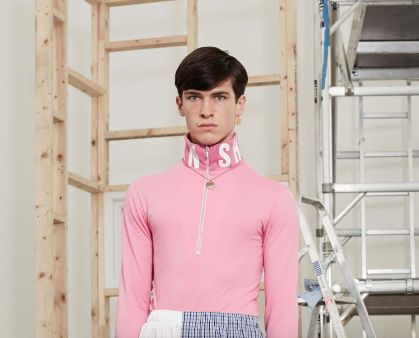
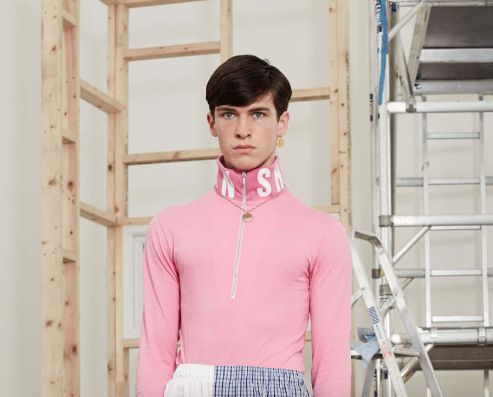
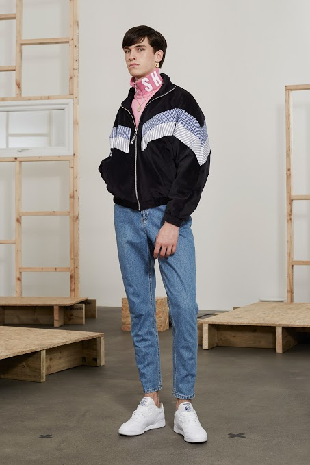
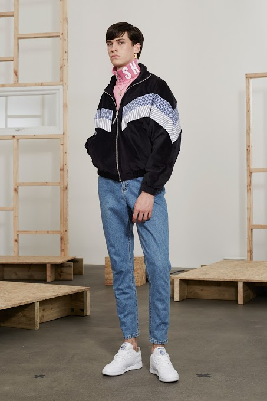
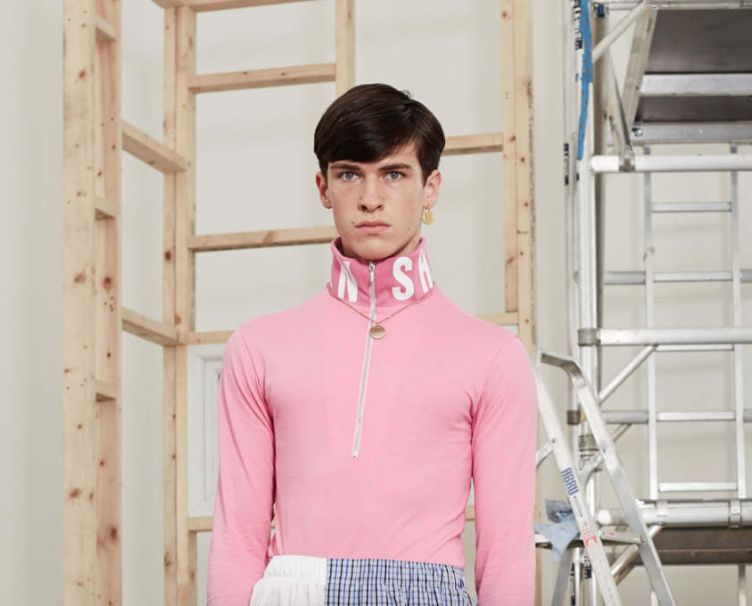
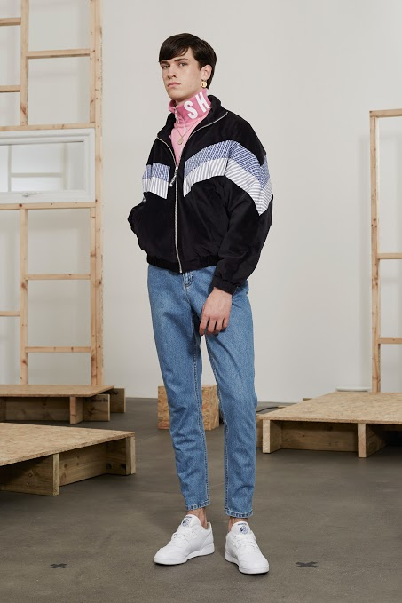

 

Working in collaboration with fashion designer Christopher Shannon on his men’s wear Autumn/Winter 2016 collection, Conor created a range of nostalgic jewellery inspired by Shannon’s youth who grew up in the suburbs on Liverpool in the 1980s; a time before the era of accessibility and fast fashion culture.
Using Shannon’s inspiration Conor was able to create a selection of pieces that played with the idea of ‘re-found objects’ like a old coin discarded and lost on a railway track that once found again would become a token of interest to the wearer.

